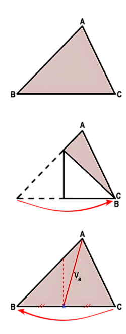
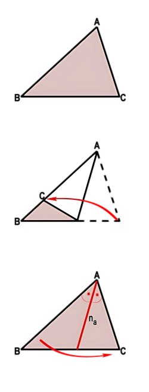
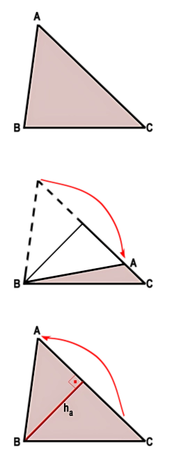
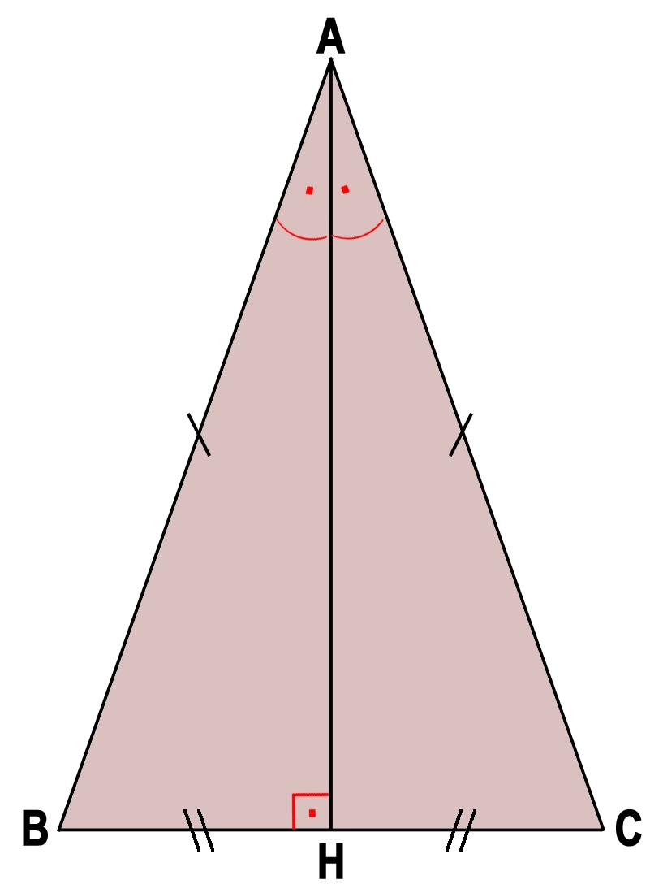
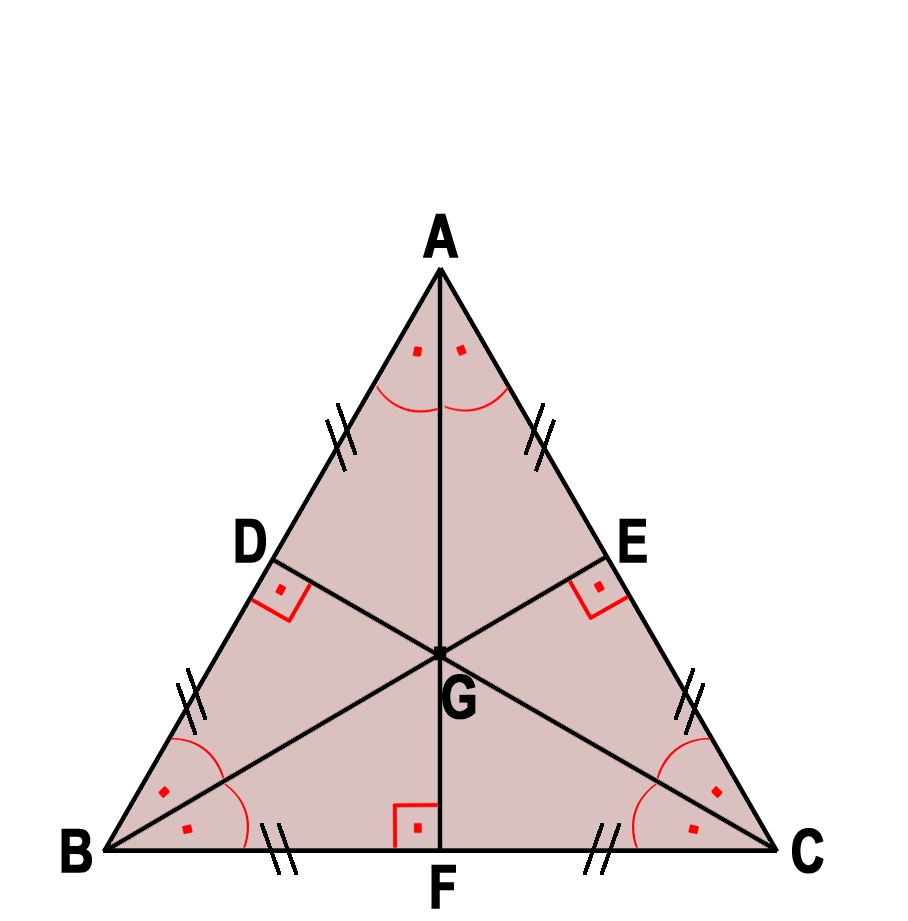

Bir üçgenin her köşesinden çizilebilen üç önemli doğru parçası vardır: kenarortay, açıortay ve yükseklik. Her üçgende her köşeden birer tane olmak üzere 3 kenarortay, 3 açıortay ve 3 yükseklik bulunur.
Kenarortay

Bir köşeyi, karşısındaki kenarın orta noktasına birleştiren doğru parçasıdır.
Açıortay

Bir köşedeki açıyı iki eş açıya bölen ve karşı kenarı kesen doğru parçasıdır.
Yükseklik

Bir köşeden, karşısındaki kenara dik olarak çizilen doğru parçasıdır.
- Üçgende bir köşe ile karşı kenarın orta noktasını birleştiren doğru parçası kenarortaydır.
- İkizkenar üçgende farklı uzunluktaki kenara ait kenarortay aynı zamanda açıortay ve yüksekliktir.
- Eşkenar üçgende her bir kenara ait kenarortay aynı zamanda açıortaydır ve yüksekliktir.
Bir köşeden, karşı kenarın orta noktasına çizilen doğru parçasına kenarortay denir. Kenarortaylar, üçgenin iç bölgesindeki bir noktada kesişirler. Bu nokta, üçgenin ağırlık merkezidir. Aşağıdaki üçgenin tepe noktasını kaydırıcılarla hareket ettirin, hangi köşeden kenarortay çizileceğini seçin. Kenarortayın, her seferinde karşı kenarın aynı noktasına ulaştığını görebilirsiniz.
Bir köşedeki açıyı iki eş parçaya bölen ve karşı kenarı kesen doğru parçasına açıortay denir. Açıortaylar, üçgenin iç bölgesindeki bir noktada kesişirler. Aşağıdaki üçgenin şeklini kaydırıcılarla değiştirip köşe seçerek açıortayın karşı kenarı nerede kestiğini gözlemleyin. Açıortayın, her seferinde karşı kenarın farklı noktasına ulaştığını görebilirsiniz.
Bir köşeden, karşısındaki kenara (gerekirse bu kenarın uzantısına) çizilen dik doğru parçasına yükseklik denir. Dar açılı üçgenlerde yükseklikler, üçgenin iç bölgesindeki bir noktada kesişirler. Dik açılı üçgenlerde yükseklikler, üçgenin dik köşesinde kesişirler. Geniş açılı üçgenlerde yükseklikler, üçgenin dış bölgesindeki bir noktada kesişirler. Tepe noktasını kaydırarak geniş açılı bir üçgen oluşturduğunuzda, yüksekliğin ayağının kenarın dışına düşebildiğini görebilirsiniz.
İkizkenar Üçgen

Tepe açısından çizilen kenarortay, aynı zamanda açıortay ve yüksekliktir.
Eşkenar Üçgen

Her köşeden çizilen kenarortay, açıortay ve yükseklik eş doğru parçalarıdır.
Aşağıda tepe noktasını kaydırıcılarla değiştirin; üçgenin üç kenarortayının da (her zaman!) aynı noktada kesiştiğini gözlemleyin. Bu ortak noktaya ağırlık merkezi denir.
Kenarortayların herhangi biri üzerinde cetvelle ölçüm yaparsanız; kenarortayın uzun parçasının, kısa parçanın tam iki katı kadar uzunlukta olduğunu görebilirsiniz.
Daha önce bir doğru parçasının orta dikmesini pergel ve cetvelle inşa etmiştiniz: doğru parçasının uç noktalarından, parçanın yarısından büyük ve birbirine eşit yarıçaplı iki yay çizilir; yayların kesiştiği iki nokta birleştirildiğinde orta dikme elde edilir ve bu doğru, parçayı tam ortasından keser.
Aşağıda hangi kenarın orta noktasını bulacağınızı seçin, yay yarıçapını kaydırıcıyla ayarlayın (yarıçap her zaman kenarın yarısından büyük olmalıdır).
- Kenarortay: bir köşeyi, karşı kenarın orta noktasına birleştiren doğru parçasıdır.
- Açıortay: bir köşedeki açıyı iki eş açıya bölen ve karşı kenarı kesen doğru parçasıdır.
- Yükseklik: bir köşeden karşı kenara (gerekirse uzantısına) çizilen dik doğru parçasıdır.
- İkizkenar üçgende tepe açısından çizilen kenarortay, açıortay ve yükseklik çakışır.
- Eşkenar üçgende her köşeden çizilen bu üç eleman çakışır.
- Çeşitkenar üçgende en uzun yardımcı eleman kenarortay, en kısa yardımcı eleman ise yüksekliktir.
- Bir üçgenin üç kenarortayı her zaman ortak bir noktada kesişir; bu noktaya ağırlık merkezi denir.
- Eşkenar üçgende ağırlık merkezi kenarortayı, bir diğerinin iki katı uzunlukta olan iki parçaya ayırır.